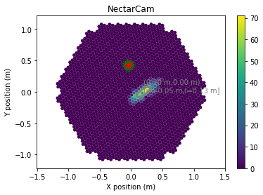

Example of a Camera Display¶
[1]:
%matplotlib inline
[2]:
import matplotlib.pylab as plt
from ctapipe.instrument import CameraGeometry
from ctapipe.visualization import CameraDisplay
from ctapipe.image import toymodel
from ctapipe.image import hillas_parameters, tailcuts_clean
import numpy as np
import astropy.units as u
Just a quick function to mark a pixel and draw lines to its neighbors
[3]:
def draw_neighbors(geom, pixel_index, color='r', **kwargs):
""" draw lines between a pixel and its neighbors"""
neigh = geom.neighbors[pixel_index] # neighbor indices (not pixel ids)
x, y = geom.pix_x[pixel_index].value, geom.pix_y[pixel_index].value
for nn in neigh:
nx, ny = geom.pix_x[nn].value, geom.pix_y[nn].value
plt.plot([x, nx], [y, ny], color=color, **kwargs)
Now, let’s create a fake Cherenkov image from a given CameraGeometry and fill it with some data:
[4]:
# get the HESS demo camera geometry
geom = CameraGeometry.from_name("NectarCam")
# create a fake camera image to display:
model = toymodel.Gaussian(
x=0.2 * u.m,
y=0.0 * u.m,
width=0.05 * u.m,
length=0.15 * u.m,
psi='35d',
)
image, sig, bg = model.generate_image(geom, intensity=1500, nsb_level_pe=5)
# apply really stupid image cleaning (single threshold):
mask = tailcuts_clean(geom, image, 10, 5)
# calculate image parameters
image[~mask] = 0
hillas = hillas_parameters(geom, image)
[5]:
# show the camera image and overlay Hillas ellipse
disp = CameraDisplay(geom)
disp.add_colorbar()
disp.image = image
disp.overlay_moments(hillas, color='grey', linewidth=3,zorder=10)
disp.highlight_pixels(mask, alpha=0.1, color='white')
# draw the neighbors of pixel 430 in red, and the
# neighbor-neighbors in green
for ii in geom.neighbors[430]:
draw_neighbors(geom, ii, color='green')
draw_neighbors(geom, 430, color='red',lw=2)

For online use, you can use the mpld3 library to automatically convert this to a zoomable HTML5 plot if you like. Simply call display() at the end of the code:
import mpld3
...
mpld3.display()
[ ]: